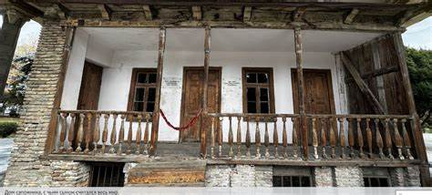

შიდა ქართლი — საქართველოს ერთ-ერთი ისტორიულ-გეოგრაფიული მხარეა.
იგი მდებარეობს ქვეყნის ცენტრალურ ნაწილში და ითვლება ერთ-ერთ უმნიშვნელოვანეს რეგიონად თავისი ისტორიული, კულტურული და გეოპოლიტიკური მნიშვნელობით.
ЪЊЇ მდებარეობა და გეოგრაფია
საზღვრები:
ჩრდილოეთით — დიდი კავკასიონის ქედი
სამხრეთით — მცირე კავკასიონის ქედი
დასავლეთით — იმერეთი და რაჭა-ლეჩხუმი
აღმოსავლეთით — კახეთი და ქვემო ქართლი
მდინარეები: ცენტრალური მდინარეა მტკვარი, რომელსაც უამრავი შენაკადი აქვს.
რელიეფი: შიდა ქართლი გადაჭიმულია მდელოებსა და მთიან ზონაში. მასში შედის გორი, ხაშური, კასპი, ქარელი და ნაწილობრივ ცხინვალიც (დე-ფაქტო ოკუპირებული ტერიტორია).
ЪЈЏ ისტორია
ქართლის სამეფო (ძველი პერიოდი) — შიდა ქართლი იყო ერთ-ერთი მთავარი ცენტრი ქართლის სამეფოსი, შემდგომში კი ერთიან საქართველოსი.
გორი — შიდა ქართლის მთავარი ქალაქი, დაარსებულია უძველეს დროში, დღეს ცნობილია გორის ციხითა და სტალინის სახლ-მუზეუმით.
სტრატეგიული მნიშვნელობა — ისტორიულად მუდამ იყო გზაჯვარედინი, რაც მას ხდიდა მიზიდულობად მრავალ შემომტევი ძალისთვის (სპარსები, ოსმალები, რუსები).
ЪДЉРђЇЪцЮРђЇЪДЉ მოსახლეობა და კულტურა
მოსახლეობა ძირითადად ქართველები არიან, თუმცა ზოგიერთი ეთნიკური უმცირესობაც ცხოვრობს.
აქაურები ტრადიციულად მისდევენ მიწათმოქმედებას, მევენახეობას და მესაქონლეობას.
შიდა ქართლი ცნობილია ფოლკლორით, ტრადიციული ცეკვებითა და სიმღერებით.
ЪЈъ ღირსშესანიშნაობები


ЪїЙ ეკონომიკა
მიწათმოქმედება — ხორბალი, სიმინდი, ბოსტნეული, ვენახები.
მრეწველობა — მსუბუქი მრეწველობა, მშენებლობა, მომსახურება.
რეგიონში გადის ცენტრალური ავტოსტრადა და რკინიგზა, რაც ხელს უწყობს ეკონომიკურ განვითარებას.

Ъћ╣ სრული სახელი:
იოსებ ბესარიონის ძე ჯუღაშვილი
Ъћ╣ დაბადება:
18 დეკემბერი, 1878 წელი (ძველი სტილით – 6 დეკემბერი)
დაბადების ადგილი: ქალაქი გორი, საქართველო (მაშინ რუსეთის იმპერია)
Ъћ╣ გარდაცვალება:
5 მარტი, 1953 წელი
გარდაცვალების ადგილი: კუნცევოს რეზიდენცია, მოსკოვთან ახლოს, საბჭოთა კავშირი
მიზეზი: ტვინის ინსულტი
Ъћ╣ ვინ იყო სტალინი?
იოსებ სტალინი იყო საბჭოთა კავშირის ლიდერი და ერთ-ერთი ყველაზე გავლენიანი პოლიტიკური ფიგურა მე-20 საუკუნეში. მან სათავეში ჩაიგდო მთელი ქვეყანა და დაამკვიდრა ავტორიტარული რეჟიმი, რომელიც ცნობილია როგორც სტალინიზმი.
Ъћ╣ მნიშვნელოვანი ფაქტები:
სწავლობდა ტფილისის სასულიერო სემინარიაში, მაგრამ იქიდან გარიცხეს.
1900-იანი წლებიდან ჩაერთო მარქსისტულ-რევოლუციურ მოძრაობაში.
1917 წლის ოქტომბრის რევოლუციის შემდეგ გახდა ბოლშევიკების ერთ-ერთი ლიდერი.
1920-იან წლებში გახდა პარტიის გენერალური მდივანი, და საბოლოოდ მოიპოვა მთელი ძალაუფლება.
1924 წელს ლენინის გარდაცვალების შემდეგ გააძლიერა თავისი ძალაუფლება და ოპონენტების (მათ შორის ტროცკის) დევნა დაიწყო.
მისი მმართველობა გამოირჩეოდა რეპრესიებით, შიმშილობით, გადასახლებებითა და ათასობით ადამიანის დახვრეტით.
მეორე მსოფლიო ომში საბჭოთა კავშირი სტალინის მეთაურობით იყო ერთ-ერთი მთავარი გამარჯვებული.
ომის შემდეგ დაიწყო “ცივი ომი” დასავლეთთან.
Ъћ╣ ცნობილი მოვლენები სტალინის ეპოქაში:
ინდუსტრიალიზაცია და კოლექტივიზაცია – სოფლის მეურნეობისა და მრეწველობის ძალით გარდაქმნა.
დიდი წმენდა (1936–1938) – პოლიტიკური რეპრესიები და მასობრივი განადგურება.
მეორე მსოფლიო ომი – სტალინი იყო სსრკ-ის სამხედრო მეთაური.
პოსტ-ომის პერიოდში – სსრკ გაძლიერდა, მაგრამ პოლიტიკურად დახურული და მკაცრი გახდა.
Ъћ╣ სტალინის მემკვიდრეობა:
სტალინის მმართველობა იყო ერთდროულად განვითარების და ტერორის ეპოქა. ერთნი მას დიდ ლიდერად თვლიან, სხვები – სასტიკ დიქტატორად.
ნიკიტა ხრუშჩოვმა 1956 წელს დაგმო სტალინის კულტად ქცევა და დაიწყო დესტალინიზაცია.
შიდა ქართლში განსაკუთხებით ქალაქ გორში ცხონებულ იოსებ ბესარიონის ძე სტალინს დიდ პატივს ცემს ხალხი მათთვივ ის არა მხოლოდ ბელადი არამედ ღმერთადაც კი ითვლება
მაგალითად ერთ ერთი გორის მაცხოვრებელი ბატოი ზუმბულიძე ზურიკო არის სტალინის უდიდესი თაყვანის მცემელი მეტიც ის თავის თავს პატარა სტალინსაც კი ეძახის

Ъћ╣ მუზეუმის დაარსება:
მუზეუმი დაარსდა 1937 წელს, ჯერ კიდევ სტალინის სიცოცხლეში.
მუზეუმის მიზანი იყო იოსებ სტალინის ცხოვრების და საქმიანობის წარმოჩენა.
მუზეუმი დღესაც ფუნქციონირებს და წარმოადგენს ერთ-ერთ ყველაზე მნიშვნელოვან ისტორიულ ღირსშესანიშნაობას საქართველოში.
Ъћ╣ მუზეუმის კომპლექსი მოიცავს:
სტალინის დაბადების სახლი
პატარა აგურით ნაშენი სახლი, სადაც სტალინი დაიბადა და ბავშვობა გაატარა. იგი მუზეუმის ცენტრშია და მინის პავილიონშია მოქცეული.
მთავარი მუზეუმის შენობა
დიდი ნეოკლასიკური სტილის ნაგებობა, რომელიც აშენდა სტალინური არქიტექტურის სტილში.
შეიცავს დოკუმენტებს, ფოტოსურათებს, ნივთებს, სტალინის პირად ნივთებს, და მის სიცოცხლესთან დაკავშირებულ ექსპონატებს.
სტალინის პირადი რკინიგზის ვაგონი
მწვანე ფერის მძიმე რკინიგზის ვაგონი, რომლითაც სტალინი გადაადგილდებოდა, მათ შორის თეირანის, იალტის და პოტსდამის კონფერენციებზე.
Ъћ╣ საინტერესო ფაქტები:
მუზეუმი წლების მანძილზე დამოუკიდებელი საქართველოს ერთ-ერთი ყველაზე საკამათო მემკვიდრეობაა, რადგან ის დიდწილად წარმოადგენს სტალინის სახის იდუმალებით მოცულ და დადებით წარმოდგენას.
2008 წლის ომის შემდეგ მუზეუმზე დაისვა რეკონსტრუქციის და მისი შინაარსობრივი შეცვლის საკითხი – რომ იგი არა სტალინის კულტის გაგრძელება, არამედ მისი რეჟიმის მსხვერპლთა ხსოვნის ადგილი გამხდარიყო.
მუზეუმში დღემდე სტუმრობენ როგორც ქართველი, ისე უცხოელი ტურისტები.
